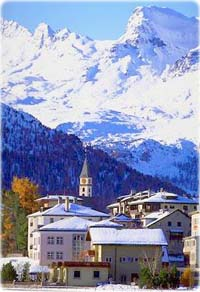

Lekcije iz stila...
I dok su neki samo metaforično u januaru lenstvovali u Sen Moricu, voditelj i urednik RTS-a, poznatog i kao javni servis, tamo je i stvarno otišao.
Ispostavilo se da su u mondenskom skijalištu i druge osobe od stila.
«Mislio sam da unuka kraljice Elizabete II mora biti uobražena, ispostavilo se da je ona obična devojka s kojom se može popiti piće.
Svakodnevno sam je viđao, kulturna je i duhovita, sofisticirana je i vidi se da je iz kraljevske porodice. Stalno je nasmejana, ima smisla za čuveni engleski humor.
Izlazio sam u najbolje restorane gde se uglavnom služe morski specijaliteti i fantastična jela od govedine. Kad je reč o alkoholu, pio sam isključivo čivas na različite načine.» (Gloria)
Zaključujemo da je i sam Predojević pokazao znatan nivo sofisticiranosti. A za to je, još ranije, iako nerado, biranim rečima u Svetu pohvalio svog šefa:
«... uvek mi je mučno kad čujem da neko hvali svoga šefa, to mi liči na uvlačenje, ali garantujem da dosad nisam imao boljeg nadređenog od Tijanića. To je prvi čovek koji nam je održao predavanje o garderobi, o slaganju boja na televiziji, o tome da li se na isti način slika košulja sa belim ili nekim drugim dugmićima.
On je jedini koji nas je primorao da pratimo programe stranih TV stanica i da posmatramo kako se oblače voditelji na CNN-u i BBC-u. On ume sve da sagleda i zato od svake televizije napravi dobru televiziju.
Recimo, video sam da mi nešto smeta na licu, ali nisam mogao da provalim šta. Onda mi je Tijanić rekao da su to moji predugi zulufi. Uklonio sam sa sebe sve detalje koji bi mogli da odvuku pažnju gledaocima, čak i minđušu skidam kad radim.»
***
Pare od pretplate su, nema sada nikakve sumnje, mudro uložene i nema za šta da nam bude žao.
Ne samo da imamo vizelno bespekoran javni servis, već i dostojne reprezente na mondenskim lokacijama.
Malo li je?
 RSS feed
RSS feed
 sadržaji se objavljuju pod
sadržaji se objavljuju pod
Komentari
A možda prodaju i akcije javnog servisa, pa od tih para da i mi odemo u St. Moritz? Teško je imati stila u St. Moritzu. Pametno potrošene pare, nema šta.
elektrokuhinja | 28.01.08 18:11
Ova košulja zorno svjedoči o uspješnom usvajanju lekcija o stilu :)
Pitam se, kome je ovaj čovjek, osim naravno njegovoj porodici i Tijaniću, interesantan?I čime se pravda njegova izuzetno visoka plata?
Gledala sam ga i u žiriju za izbor voditelja Evrovizije.
Jedini je koji me je nervirao više od onog koji je simulirao saopštavanje glasova iz drugih TV centara.
Ako gospodin navrati neka nas prosvijetli i kaže nam na koliko se sve načina pije Čivas. :)
Kristina | 28.01.08 19:43
Je l to ovaj lik sa slike? Omg, bad.
Feisty | 29.01.08 08:10
Uvek se obradujem kad u svojim blogovima pomeneš Gloriju, znam da tu negde sledi neviđena izvala. .)
ubipacijentic | 29.01.08 09:41
Ja bih volela da sam kraljičina unuka i da imam smisla za engleski humor
La Lara | 29.01.08 10:29
"Svakodnevno sam je viđao".
Baš čudno, u tom milionskom odmaralištu?!??!?
Ja ću ko Feisty, omg bad.
etotako | 29.01.08 23:28
SP = queer (as folk)
i jos ce da vodi evroviziju
...
LaReinaDeLaNoche | 30.01.08 15:44
Jel' provereno to za Evroviziju? Posto i meni najvise lici da ce on i npr. Natasa Miljkovic da budu tih dvoje zbog kojih ce mi ceo ovaj dogadjaj biti jos odbojniji, ako je to uopste moguce, s obzirom na sva desavanja proteklih dana
La Lara | 30.01.08 15:50
Pare od pretplate??? Paa, saznali smo da je unucica kulturna (na zalost). Na sta sve trose i nije ovo tako lose. ;P
kulov(er | 30.01.08 21:26
@LL
+ jovana jankovic.
ima li veceg unistenja?
(to je ipak manji horor od: maja nikolic&branislav trifunovic + natasa miljkovic i onaj sto vodi dnevnik sa naocarima i bradom)
to ako tijanicu uspe to sto je naumio.
ovo evropsko lice - ocigledni paravan.
LaReinaDeLaNoche | 31.01.08 11:48
A sto mu pa ne bi uspelo, ko ce da sprechi, jel' tako?
La Lara | 31.01.08 11:52
"Jovana Janković, zaštitno lice RTS-a, najbliža je mestu voditelja izbora za „Pesmu Evrovizije“ koji se od 20. do 24. maja održava u „Areni“. Kako „Blic“ saznaje iz izvora bliskih organizatorima ove manifestacije, šarmantna voditeljka jutarnjeg programa je najozbiljniji kandidat da vodi zvaničan deo programa koji će se iz Beograda emitovati u celu Evropu." Blic, 14. feb. 2008. BLJAAAKKK!!
La Lara | 14.02.08 10:41